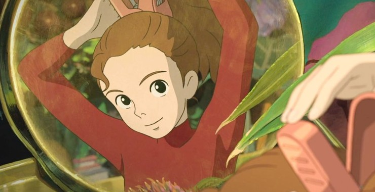
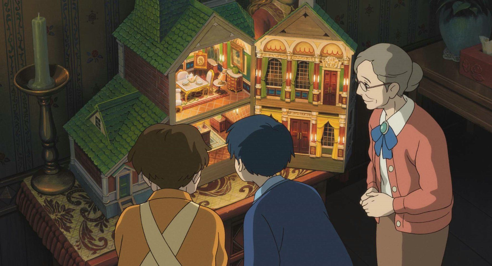
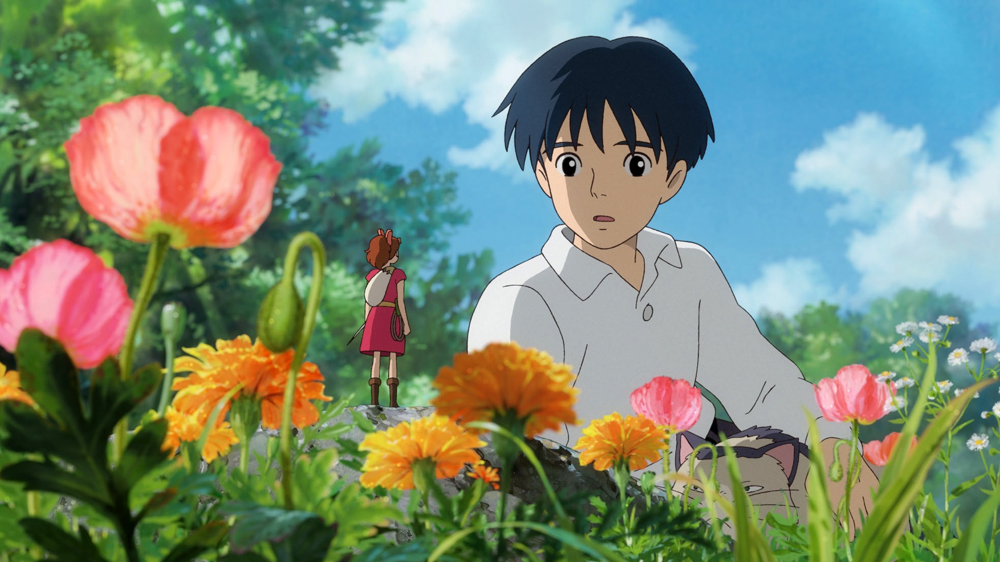
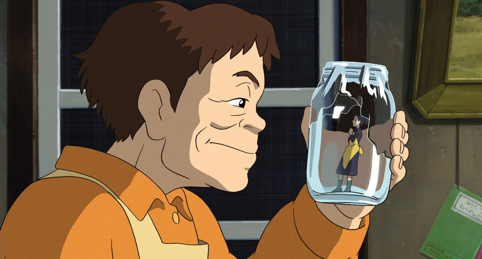
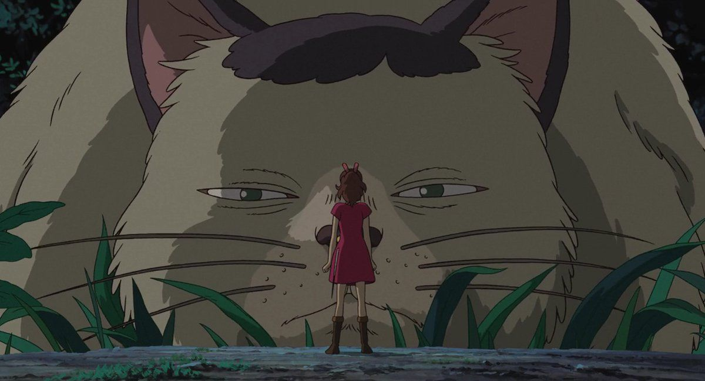
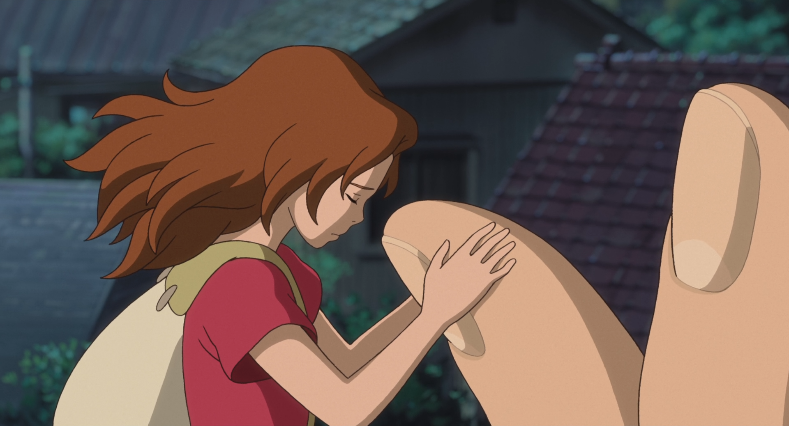
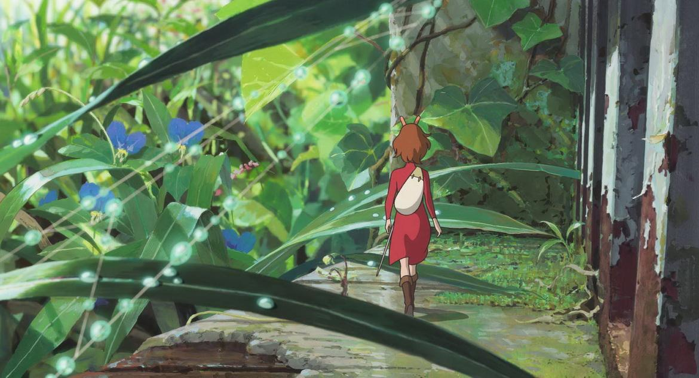
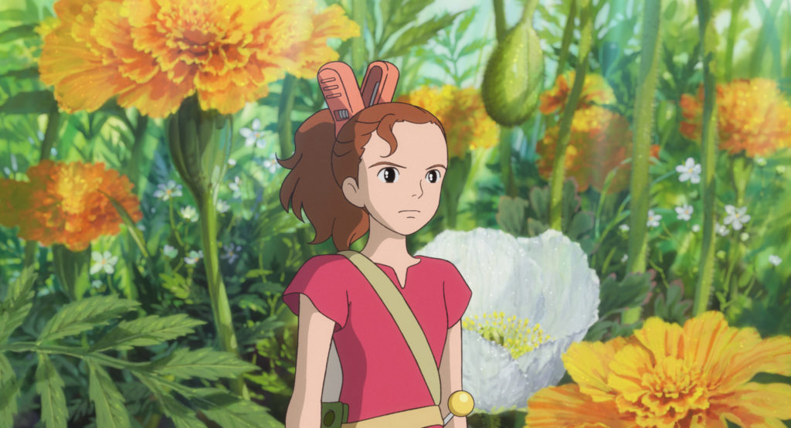

The Secret World of Arrietty is a 2010 Japanese animated fantasy film directed by Hiromasa Yonebayashi as his feature film debut as a director, animated by Studio Ghibli for the Nippon Television Network, Dentsu, Hakuhodo DY Media Partners, Walt Disney Japan, Mitsubishi, Toho and Wild Bunch, and distributed by Toho. The screenplay by Hayao Miyazaki and Keiko Niwa, was based on the 1952 novel The Borrowers by Mary Norton, an English author of children's books, about a family of tiny people who live secretly in the walls and floors of a typical household, borrowing items from humans to survive.
The film was released in Japan on July 17, 2010. Arrietty received critical acclaim, praising the animation and music. It became the highest grossing Japanese film at the Japanese box office for the year 2010, and grossed over $145 million worldwide. The film also won the Animation of the Year award at the 34th Japan Academy Prize award ceremony. Two English-language versions of the film were produced, a British dub distributed and released by StudioCanal in the United Kingdom on July 29, 2011 and an American dub released by Walt Disney Pictures in North America on February 17, 2012.
Film Plots
A boy named Shō remembers the week in summer he spent at his mother's home with his maternal great aunt, Sadako, and the housemaid, Haru. When Shō arrives, he gets a glimpse of Arrietty, a Borrower girl, returning to her home through an underground air vent.
At night, Arrietty's father, Pod, takes her on her first "borrowing" mission, to get sugar and tissue paper. After obtaining a sugar cube from the kitchen, they travel to a bedroom which they enter through a dollhouse. It is Shō's bedroom; he sees Arrietty when she tries to take a tissue from his table. Startled, she drops the sugar cube.
The next day, Shō puts the sugar cube and a little note beside the air vent. Pod warns her not to take it because their existence must be kept secret from humans. Nevertheless, she sneaks out to visit Shō in his bedroom. Without showing herself, she tells him to leave her family alone but they soon have a conversation, which is interrupted by the crow. The crow attacks Arrietty but Shō saves her. On her return home, Arrietty is intercepted by her father. Realizing they have been detected, Pod and his wife Homily decide they must move out. Shō learns from Sadako that some of his ancestors had noticed the presence of Borrowers in the house and had the dollhouse built for them. The Borrowers had not been seen since.
Pod returns injured from a borrowing mission and is helped home by Spiller, a Survivalist boy he met. Shō removes the floorboard concealing the Borrower household and replaces their kitchen with the kitchen from the dollhouse to show he hopes them to stay. However, the Borrowers are frightened by this and speed up their moving process. Pod recovers and Arrietty bids farewell to Shō. Shō apologises that he has forced them to move out and reveals he has had a heart condition since birth and will have an operation in a few days. The operation does not have a good chance of success. He is accepting, saying that every living thing dies.
Haru notices the floorboards have been disturbed. She unearths the Borrowers' house and captures Homily. Alerted by her mother's screams, Arrietty goes to investigate. Saddened by her departure, Shō returns to his room. Haru locks him in and calls a pest control company to capture the other Borrowers alive. Arrietty comes to Shō for help; they rescue Homily and he destroys all traces of the Borrowers’ presence.
On their way out during the night, the Borrowers are spotted by the cat Niya. Thereupon Niya leads Shō to the "river", a small rivulet, where the Borrowers are waiting for Spiller to take them further. Shō gives Arrietty a sugar cube and tells her that she will always be a part of him and that her courage and the Borrowers' fight for survival have made him want to live through the operation. In return, Arrietty gives him her hairclip, a small clothespin, as a token of remembrance. The Borrowers leave in a floating teapot with Spiller in search of a new home.
The Disney international dubbed version contains a final monologue, where Shō states that he never saw Arrietty again. He returned to the house a year later, indicating that the operation had been successful. Happily he overhears rumors of objects disappearing in neighboring homes.
What's Behind The Story
This so far presents us with an image of a relaxing and well-made fairy tale, but what makes this film really worth watching is its sometimes hopeful and sometimes bleak message about our culture that it projects in the form of its virtuous ethical standard. It is in the character of Shō that we see represented something that we can call common decency. In Shō's selfless act of aid to Arrietty and her parents, which can be seen when he gives them back a sugar cube that they previously left in his bedroom or when he helps them in escaping the schemes of Haru. Shō’s gracious conduct is spontaneous in the sense that he is not motivated by any personal gain, but by friendship and compassion that have their own proper merit without requiring any further justification.
In another observation we might also say that Shō is more empathetic to the daily difficulties encountered by the Borrowers since, as we gradually learn, he suffers from rheumatic fever and is waiting for his heart surgery. Indeed, the fact that when reminded of our mortality we become more perceptive to the environment around us, of our existence, and of the specific place that other people and things hold within it, was already observed by Martin Heidegger in Being and Time. Realising that being is always fleeting, one’s ego and desires are shown as limited by this place and this time and we thus get the needed impulse to see the world from a greater perspective. Indeed, true friendship and understanding of other people’s needs, as well as considerate treatment of natural environment, can come only when we do not regard our surrounding solely as a means for satisfying our desires.
On top of that, there is an environmental aspect to this movie. The borrowers are said to be a dying species. They are in constant danger - most importantly threatened by humans. Here's an environmental message. Like many Studio Ghibli films, this film is a story of a girl's coming of age. The protagonist of many Studio Ghibli films are girls. The films describe the process of maturation of the girls.
The protagonists reach maturity through overcoming pain and hardship, including physical labor. And unlike many popular films, there are no romances between boy and girl main characters.There are faint feelings of love, The main male character is there to support Arrietty and help her grow but never becomes her prince charming. This non-romantic love between characters is uncommon, and so is the inclusion of strong female protagonists at all.
Studio Ghibli was founded in 1985, many creators of Studio Ghibli are males. However, they have consistently created their films, from the beginning, which describe a girl's strength and independence. There is a feminist intent, an environmental intent. Even as an adult, we are reconnecting with what we call the child within when we view such a movie. It's a fairy tale. But like all fairy tales, it has a message. It strikes a chord. A chord of hope, perhaps, for the future.
If you are interested in other Studio Ghibli films, please visit their website
References
“Arrietty.” Wikipedia, Wikimedia Foundation, 31 Jan. 2022, https://en.wikipedia.org/wiki/Arrietty.
Grave of the Fireflies : The European Strategist says: “[Review] The Secret World of Arrietty and Its Lesson on Virtue.” The European Strategist, 13 Dec. 2014, https://www.eurstrat.eu/review-the-secret-world-of-arrietty-and-its-lesson-on-virtue/.
WKMS | By Tracy Ross. “MSU Cinema International Presents ‘The Secret World of Arrietty’ This Week.” WKMS, 4 Nov. 2021, https://www.wkms.org/sounds-good-conversations/2021-11-04/msu-cinema-international-presents-the-secret-world-of-arrietty-this-week.